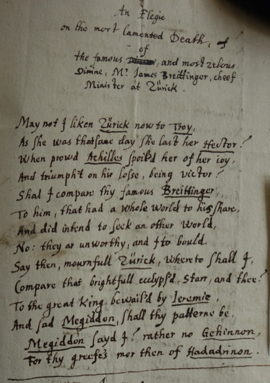

HALF A CENTURY

Wolfgang Meyer (1577-1653), a Basel professor of theology, was in touch with England for the most of his 76 years. Born to parents who were 51 and 44 years old, he is on record as wishing to leave Basel early on, with an "indelible fire burning in his youthful breast" that impelled him to travel to foreign parts and "especially to England".1 The dream came true when a grant from Queen Elizabeth enabled him to study in Cambridge from 1597 to 1601. This period is documented in more than 180 letters which Wolfgang exchanged with his parents and his brother Jonathan, who was 20 years his senior. This correspondence is held in Strasbourg and is currently being researched; highlights include Jonathan's stern admonition to Wolfgang not to watch so many "plays and pageants"2 and focus on theology instead, and a letter which Thomas Platter wrote to Meyer from London just a week before his famous visit to the Globe Theatre in 1599.
Jonathan's disapproval may have been intensified by his younger brother's inconvenient wish to remain in England. Wolfgang was simply ordered to return and help support his ageing parents, and seems to have put up no resistance. He returned to England only once, in his early forties: after attending the Synod of Dordrecht in 1618/1619, he took the geographical opportunity to make a visit with a handful of Swiss colleagues.
In his fifties, Meyer sent his own teenage son Jacob to England. The fact that Jacob wrote some letters home in English may indicate that he shared his father's passion for the language and culture, but to Wolfgang's lasting grief, Jacob died of the plague shortly after his return to Basel in 1634. Just two years later, the untimely death of Johann Jacob Frey, an immensely promising Basel student who was at Oxford when Jacob was at Cambridge, must have been a very painful echo of this loss. Frey had reported to Meyer in affectionate terms (and in English!) from Oxford, and when Frey was planning his ecclesiastical career in Britain, Wolfgang Mayer translated his sponsor's letters into German for the Basel authorities.
In his sixties, Meyer's relationship with at least one Englishman turned very sour. Sir Oliver Fleming, the affable, witty and forever money-lacking English "resident" in Zurich (who had been a great friend of Johann Jacob Frey's), decamped to Britain in the 1640s, leaving behind immense debts and a distraught wife. Wolfgang Meyer offered Lady Elizabeth Fleming and her maid a home with his family in Basel. The consequences are charted in Meyer's increasingly desperate letters to Fleming, begging for money and moral support for Lady Fleming, who at one stage threatened to throw herself in the Rhine. Meyer also had to ask for support for his own youngest son Emanuel, who was working for Fleming in London and was so irregularly paid that he seems at times have had trouble to feed himself adequately.
Nevertheless, Wolfgang Meyer continued to correspond with Britain, and a touching letter written just a year before his death wistfully mentions several English friends that had died, including the authors of devotional tracts which Meyer translated. Maybe the most remarkable record of his affinity for England dates from 1645, when he wrote an English "Elegie" on the death of the Zurich antistes Jacob Breitinger, his almost exact contemporary. The "Elegie" is a classical sonnet with a rhyme scheme somewhere between the Petrarcan and Shakespearean pattern, includes Old Testament references and opens with a classical reference: "May I not liken Zürick now to Troy, / As she was that same day she lost her Hector?"
Regula Hohl Trillini
See further relevant documents
1 "In juvenili pectore flagrabat ignis atque indelebilis cupido exteras regiones praesertim Angliam perlustrandi" (Johann Werner Herzog. Athenae Rauricae Sive Catalogus Professorum Academiae Basiliensis [...]. Basel: Unknown publisher, 1778. 85). ↩
2 "miestest nit alle triumph unnd schowspil sähen" (Jonathan Meyer. "Letter to Wolfgang Meyer. Basel, 26 August 1598." Bibliothèque et nationale de Strasbourg. JOFRES-CPAT MS.0.333, fol. 43-44). ↩